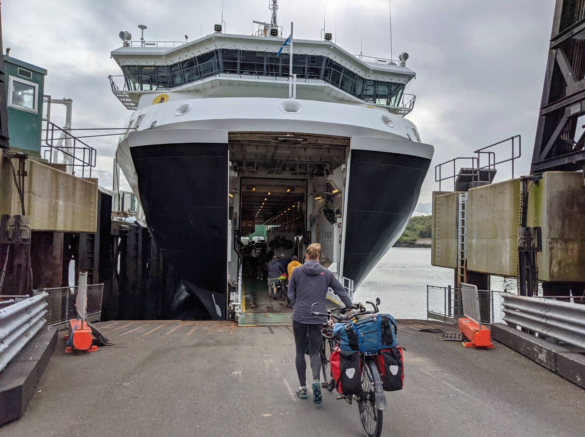
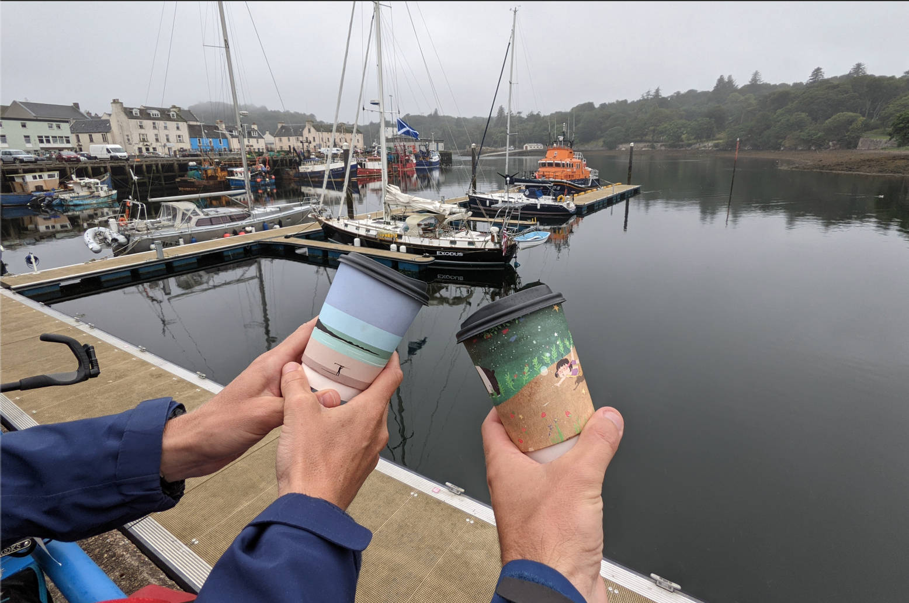
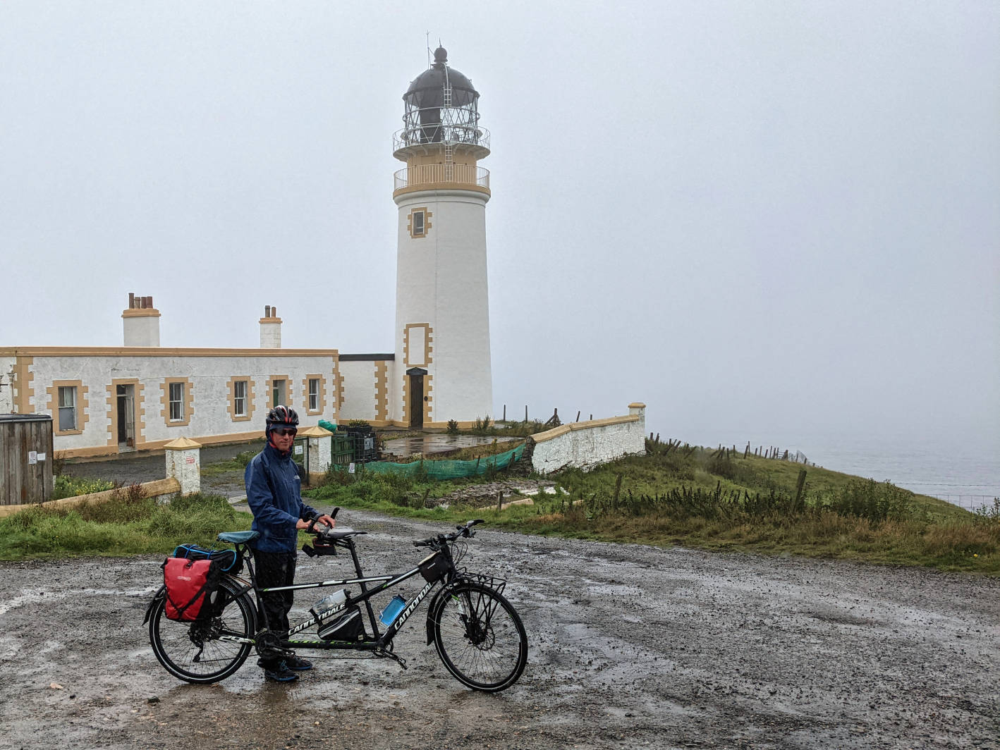
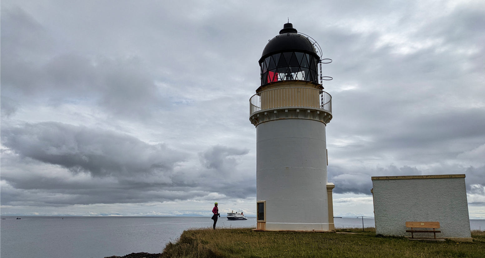
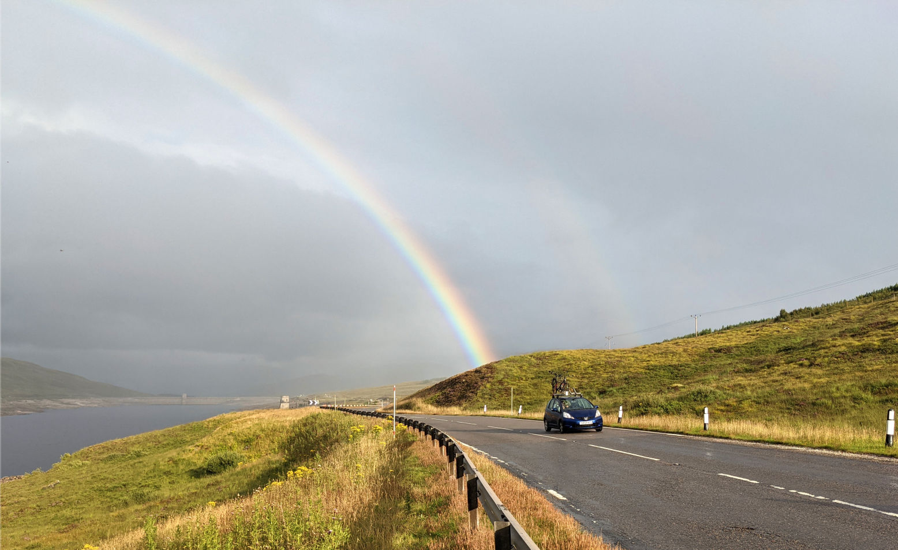
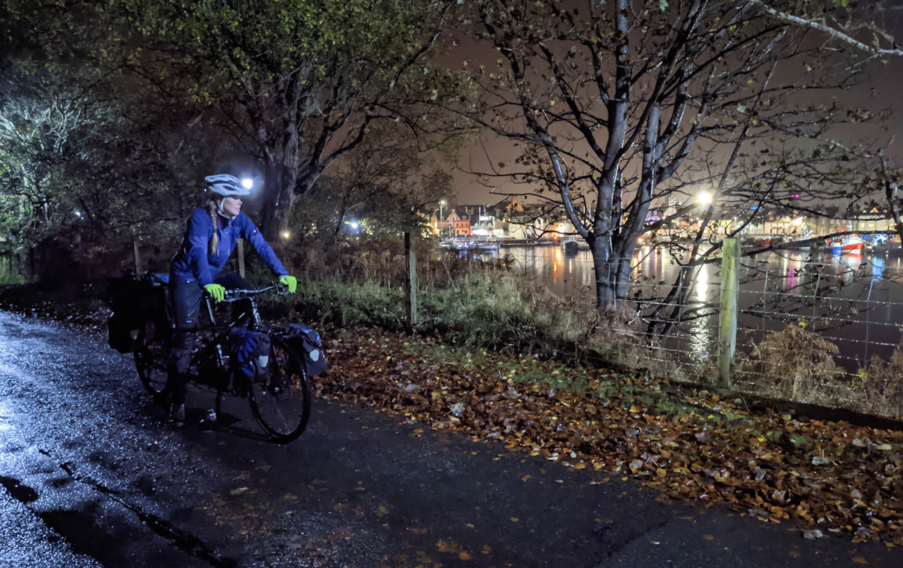
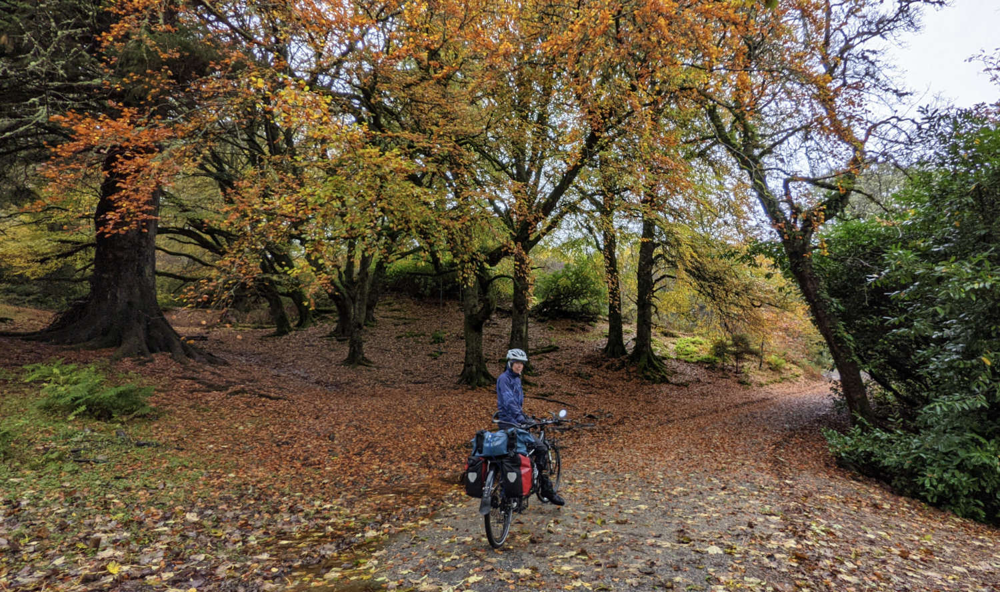
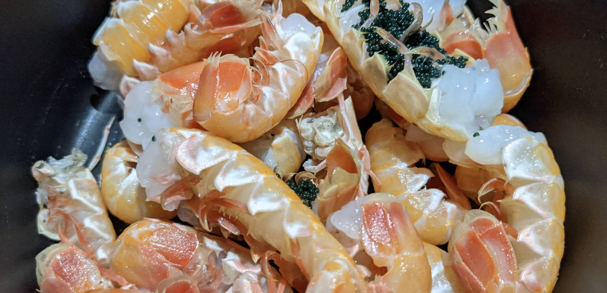
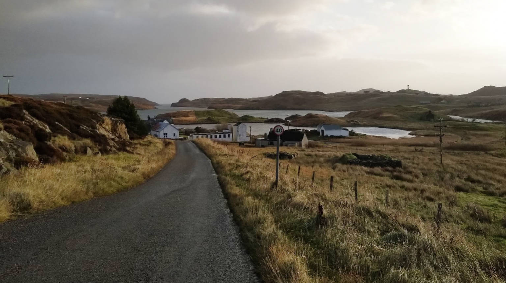
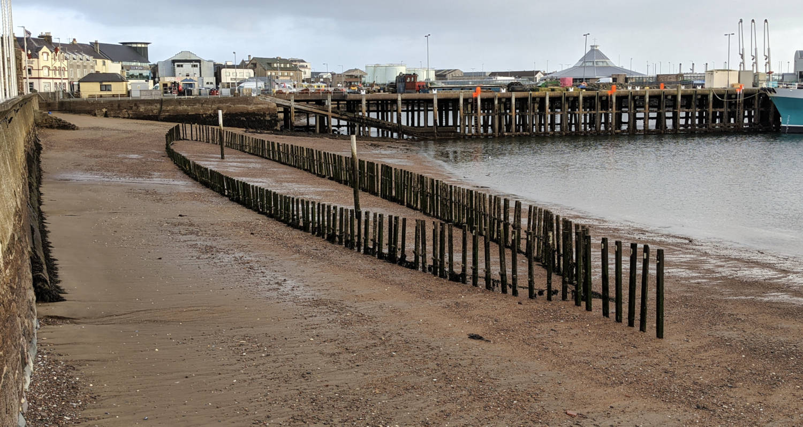

Stornoway is the capital of Lewis, one of the Western Isles or Outer Hebrides. We enjoy going there as it is not too far, but requires taking a ferry which makes it feel like a big adventure! Bringing a car is a bit costly, but the tandem bike is free. Yay for bike touring, if only for a few days. The late ferry on Friday works well with leaving work early, but arrives in Stornoway around 10 pm.

In August we went on such a long weekend. We camped at a campground close to town, and couldn’t actually remember the last time we stayed on a campground. All new experiences, camping with the luxury of a shower, dish-washing facility, laundry facility and even a little hut with a roof with kettles inside so that campers didn't have to put on their stoves for just a cup of tea! Oh my! We were not the only ones going to the campground straight from the ferry, and were still open for check in even at the late hour.
That Saturday morning started somewhat sunny. Annette went for a run, trying to cross the bay over to the other side on a low tide without swimming, which didn't work and required a retrace of steps. After that it started raining (not forecast) and never stopped. It went something like this:
"Stop the bike, my head is getting wet, I need to put up my hood"
... the sound of wet brakes chattering ...
[2 minutes later]
"My feet are getting wet. How come you didn't remind me to bring my shoe covers"
"You know in Scotland there is always a chance on rain"
... silence ...
"Oh, now my zipper is leaking and my chest is getting wet"
"CAN'T YOU SAY ANYTHING POSITIVE!"
"Uh, my belly button is getting clean!"
And so we found ourselves, rolling down a wet highway with views obscured by fog, and one half of the tandem bike was in a better mood than the other half. We managed to find the lighthouse through the low hanging clouds. Admittedly, lighthouses are usually at the end of the end of the end of the last road, so somewhat hard to miss, but still.


On the way back there was a standing stone and a 6000 year old chambered cairn to visit, and by the time we got back to the tent it became somewhat dry.
Sunday's weather proved to be a lot nicer (dry!). Annette couldn't resist getting up early for a swim in the ocean. The beaches are beautiful and so large! The western isles are very religious, so nothing was open in Stornoway on a Sunday. However, Leigh had done his Google research and found one bakery somewhere in the middle of a housing area that was open and got some nice treats to start our day.
Although it was ferry day, we had time for another lighthouse. We cycled through the castle grounds, a wonderful park/forest area connected to Stornoway. Around the lighthouse we found WWII defence bunkers. We saw our ferry coming in when we were at the lighthouse, and had to race back to be at the ferry dock in time to take it back to Ullapool. No worries, no flat tire, we managed.

”Every negative has it's positive'' was also very true on this trip, the rainy weather made for beautiful skies on the drive back home!

The second Stornoway long-weekend adventure took place in November. The Friday ferry arrived even later, as it had to wait outside the harbour for a freight ship to depart. It was now already dark for a long time, and we still had an hour to bike in the rain to our yurt that we rented on Airbnb for the weekend.

Upon arrival we found out that the yurt was worth every peddle stroke. Not only did it look amazing, the host had put the heating on in advance. We settled quickly and were grateful to not be huddled in a wet tent.
Overnight the wind picked up to a proper storm. We were anticipating having to take the bus around because of the high winds, but we just managed to hold the bike on the road. The ferry was cancelled and fishing boats were staying in the harbour, both a clear sign of bad conditions in the Minch (sea between the outer Hebrides and Scottish mainland). We had some fresh eggs for breakfast that we (were encouraged to) picked from the chicken pen next to our yurt, and went about our day, enjoying the fall colours.

The stormy weather did not deter the man selling fish on the Stornoway outdoor market square. None of the other vendors had shown up, but he was there holding the fort! We bought some langoustines off him, which are small local lobsters, and had them for dinner in our yurt later.

The storm kept raging, and finally on Sunday morning we found out that the rain had stopped, and our yurt hadn’t blown away (though it sounded a couple of times like it would). It was time to explore the village where we were staying through a Sunday morning run. Beautiful views all the way.

This post is going to end with a description of some art we saw. Stornoway, as being an island, has had many ships going under over the years. Perhaps none were so tragic as the story of Sheol Nan Iolaire. This ship left Scotland mainland on 31 December 1918 to arrive in the Stornoway harbour 1th January 1919, returning 280 men to their homes and families after having fought in WWI. Within sight of the harbour it hit a rock and went down resulting in the loss of 205 men. To commemorate this enormous tragic loss, there are several memorials for this event, among which one that I found so well suited and different that I thought I'd share. In the Stornoway harbour between piers 1 and 2 there is a beach drying out at low tide. An artist has made the ship come home to the harbour by hammering 280 wooden poles in the beach that form the real outline of the ship. Every time the water retreats after high tide the boat becomes visible, and it disappears again at high tide, back to its final resting place. Each of the 280 poles stand for 1 men. The poles are lit up at night, blue for the non-survivors, red for the survivors.
